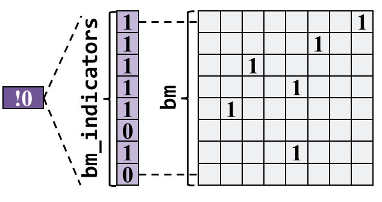
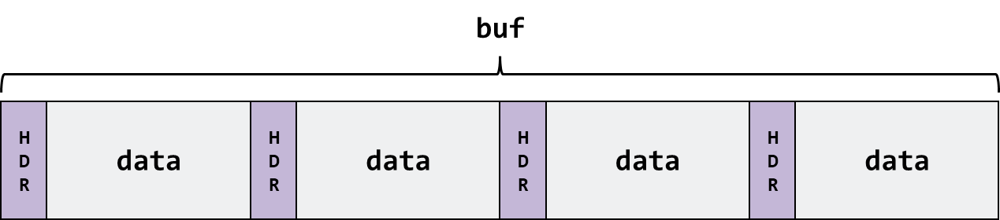
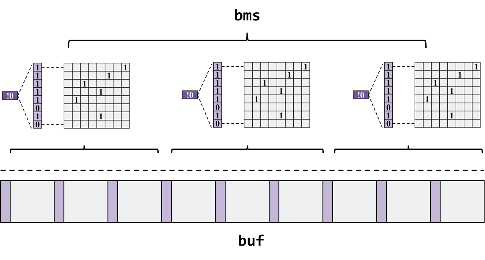

选做任务¶
1. 磁盘缓存（选做任务）¶
1.1 磁盘缓存简介¶
磁盘的访问速度远小于内存的访问速度 ，而现实中磁盘的容量也远大于内存，所以为了提速 把整个磁盘内容读到内存中是不现实的 。但是，我们还是有一些手段提高对磁盘的访问速度。 根据局部性原理 ，最近被访问过的空间接下来也很可能被访问到，所以我们可以做 一些缓存块 ，把 最近最常被访问的数据放入缓存块中 。如何管理缓存块，采取怎样的 替换策略 ，以及在什么时机下 写回 ，如何保证 一致性 ，这些都是磁盘缓存需要考虑的问题。
1.2 实现指南¶
SFS提供了一种简单的缓存方案。
- 缓存块分配：利用内存结构查找缓存中第一个空闲缓存块，若无空闲缓存块，则采用后述替换策略释放缓存块。
- 缓存块替换：被替换缓存块的挑选采用一种较为简单的 近似先入先出 方法。假设缓存块总共有
n块，我们总是记录上一次被替换的缓存块i，则本次将要被替换的缓存块j = (i + 1) mod n。 - 缓存块命中：我们为每个缓存块都会维护一个元数据，元数据记录了该缓存块对应介质上的物理地址，我们通过检查物理地址是否重合来判断缓存块是否命中。
- 缓存块索引：SFS使用位图对缓存块的分配情况进行管理。但是位图面临的搜索时间为O(N)。SFS将位图划分为多个子位图，每个子位图由一个元数据节点管理，统计该子位图的分配情况。我们在后面进行更为详细的介绍。
- 缓存块回写方式：Write-Back模式
SFS可以很容易地实现对文件数据的缓存，其伪代码可表示如下：
- 读数据：
if not hit_cache(offset):
read_into_cache(offset)
read_from_cache(offset)
- 写数据：
if not hit_cache(offset):
read_into_cache(offset)
write_to_cache(offset)
1.2.1 SFS缓存实现¶
首先切换到buf分支以完成实验：
git checkout buf
值得说明的是，为了更好地模拟磁盘延时，我们向user_ddriver中人为插入了延迟函数，相关代码可阅读buf分支下的ddriver.c。
1.2.2 数据结构¶
struct sfs_bm_node {
int avai; /* 该位图剩余的记录数 */
uint8_t bm_indicators[SFS_CACHE_BMID_N]; /* 元数据位图 */
uint8_t bm[SFS_CACHE_BMND_N]; /* 数据位图 */
};
sfs_bm_node位于内存中，用于缓存块管理，可以理解为一个子位图结构，其中bm字段代表数据位图，bm_indicators进而记录bm中每8位的分配情况：如果为0，代表该8位中无有效（被分配）位；为1代表该8位中有有效位。值得说明的是，如果仅记录每8位一组，完全可以通过&0xFF操作实现，事实上，这个方法可以推广到记录每128位甚至更高的情况。最后，avai字段记录改为图剩余的记录数，非0代表还有空闲块，0代表无空闲块。因此单个sfs_bm_node节点可以画图表示为：

struct __attribute__((packed)) sfs_cnode_hdr
{
int phys_ofs;
int flags;
};
struct __attribute__((packed)) sfs_cnode
{
struct sfs_cnode_hdr hdr;
unsigned char data[];
};
sfs_cnode代表一个缓存块节点，其包含一个元数据头不hdr与缓存的数据data，hdr中记录了缓存块对应的物理地址phys_ofs与一些标志位flags（是否写脏）。注意，在SFS中，缓存块大小默认与IO块大小对齐，因此不记录块大小。当然，你可以更粗粒度地去管理一个缓存块，例如2个IO块大小等。sfs_cnode的集合构成了SFS缓存Buffer，如下图所示：

struct sfs_cache
{
int sz_blk; /* 每个缓存数据块大小 = io_sz */
int num_blk; /* 缓存的数据块数 */
struct sfs_bm_node *bms; /* Cache分配位图 */
int num_bms; /* 分配位图的个数 */
int last_evicted; /* 上一次驱逐块 */
unsigned char *buf; /* Cnode存放区 */
int cache_hit;
int cache_miss;
int cache_wb;
int cache_ld;
};
sfs_cache代表整个缓存结构，相关变量定义不再赘述。其中，cache_开头的字段代表缓存的命中、回写、加载信息。进而，我们用下图来描述缓存的整体结构：

值得说明的是，SFS中的缓存结构完全被部署在内存中，并非硬件Cache。
1.2.3 关键方法¶
- 命中或申请分配缓存块：
函数介绍：
该方法做两个事情：
- 根据传入参数
phys_ofs判断是否命中Cache，若未命中Cache，则执行步骤二 - 分配一个空闲的缓存块，若没有缓存块，则按前述替换算法进行缓存块替换释放
返回值：该方法返回 phys_ofs对应的缓存块块号
函数实现如下：
int sfs_cache_hit_or_alloc_blk(struct sfs_cache *cache, int phys_ofs) {
int blk = -1;
int bm_id, line, i;
int num_bms = cache->num_bms;
int bm_lines = SFS_CACHE_BMND_N;
int free_blk = -1;
int evict_blk = -1;
struct sfs_bm_node *bm_node;
struct sfs_cnode *cnode;
for (bm_id = 0; bm_id < num_bms; bm_id++) { /* 遍历所有为位图，查看Cache命中和空闲块 */
bm_node = &cache->bms[bm_id];
if (bm_node->avai != SFS_CACHE_BMND_N * UINT8_BITS) {
for (line = 0; line < bm_lines; line++) {
if (bm_test(bm_node->bm_indicators, line)) {
blk = bm_id * SFS_CACHE_BMND_N * UINT8_BITS + line * UINT8_BITS;
for (i = 0; i < UINT8_BITS; i++) {
if (bm_test(bm_node->bm, blk + i)) {
cnode = GET_CNODE(cache, blk + i);
if (cnode->hdr.phys_ofs == phys_ofs) {
cache->cache_hit += 1;
return blk + i;
}
}
else {
if (free_blk == -1) {
free_blk = blk + i;
}
}
}
}
else {
if (free_blk == -1) {
blk = bm_id * SFS_CACHE_BMND_N * UINT8_BITS + line * UINT8_BITS;
free_blk = blk;
}
}
}
}
else {
blk = bm_id * SFS_CACHE_BMND_N * UINT8_BITS;
free_blk = blk;
}
}
cache->cache_miss += 1;
if (free_blk == -1 || free_blk > cache->num_blk - 1) {
/* 驱逐缓存行 */
evict_blk = (cache->last_evicted + 1) % cache->num_blk;
sfs_cache_rls_blk(cache, evict_blk);
cache->last_evicted = evict_blk;
free_blk = evict_blk;
}
blk = free_blk;
sfs_cache_alloc_blk(cache, blk, phys_ofs);
return blk;
}
其中，下述代码主要完成位图的遍历，对于每一个sfs_bm_node，严格按照顺序检查：avai→bm_indicators→bm。在遍历过程中，记录下第一个空闲块free_blk，便于缓存未命中时返回。
for (bm_id = 0; bm_id < num_bms; bm_id++) { /* 遍历所有为位图，查看Cache命中和空闲块 */
bm_node = &cache->bms[bm_id];
if (bm_node->avai != SFS_CACHE_BMND_N * UINT8_BITS) {
for (line = 0; line < bm_lines; line++) {
if (bm_test(bm_node->bm_indicators, line)) {
blk = bm_id * SFS_CACHE_BMND_N * UINT8_BITS + line * UINT8_BITS;
for (i = 0; i < UINT8_BITS; i++) {
if (bm_test(bm_node->bm, blk + i)) {
...
}
...
}
}
...
}
}
else {
...
}
}
以下代码用于检测是否命中。首先获取目标缓存块sfs_cnode，再比对phys_ofs即可。
cnode = GET_CNODE(cache, blk + i);
if (cnode->hdr.phys_ofs == phys_ofs) {
cache->cache_hit += 1;
return blk + i;
}
如果发现既未命中缓存块，又没有free_blk，则触发缓存替换，被替换的块作为新的空闲块被分配。其中，需要说明两个函数：
sfs_cache_rls_blk：该函数用于将缓存块的内容调用 驱动写 回写到介质上，并更新相应的位图索引结构sfs_cache_alloc_blk：该函数用于将对应phys_ofs的内容调用 驱动读 读取到相应的缓存块中，并更新缓存块元数据hdr，更新相应的位图索引结构
int sfs_cache_hit_or_alloc_blk(struct sfs_cache *cache, int phys_ofs) {
...
cache->cache_miss += 1;
if (free_blk == -1 || free_blk > cache->num_blk - 1) {
/* 驱逐缓存行 */
evict_blk = (cache->last_evicted + 1) % cache->num_blk;
sfs_cache_rls_blk(cache, evict_blk);
cache->last_evicted = evict_blk;
free_blk = evict_blk;
}
blk = free_blk;
sfs_cache_alloc_blk(cache, blk, phys_ofs);
return blk;
}
- 读写方法
读方法为sfs_try_cache_read，写方法为sfs_try_cache_write。主要思路几乎一致，首先通过调用sfs_cache_hit_or_alloc_blk获取offset对应的缓存块，然后对缓存块进行读取或写入即可。
int sfs_try_cache_read(struct sfs_cache *cache, int offset, uint8_t *out_content, int size) {
...
if (IS_CACHE_ENABLE(cache)) {
blk = sfs_cache_hit_or_alloc_blk(cache, offset);
cnode = GET_CNODE(cache, blk);
memcpy(out_content, cnode->data, size);
...
}
...
}
int sfs_try_cache_write(struct sfs_cache *cache, int offset, uint8_t *in_content, int size) {
...
if (IS_CACHE_ENABLE(cache)) {
blk = sfs_cache_hit_or_alloc_blk(cache, offset);
cnode = GET_CNODE(cache, blk);
memcpy(cnode->data, in_content, size);
...
}
...
}
接下来，修改SFS封装的sfs_driver_read和sfs_driver_write即可，这两个函数原本的目的是为了适配任意offset与size，让修改符合IO块大小。修改方式很简单，只需要将原来的ddriver_seek + ddriver_read或ddriver_write更换为sfs_try_cache_read或sfs_try_cache_write即可，相关代码如下所示：
/* sfs_utils.c */
int sfs_driver_read(int offset, uint8_t *out_content, int size) {
...
// lseek(SFS_DRIVER(), offset_aligned, SEEK_SET);
// ddriver_seek(SFS_DRIVER(), offset_aligned, SEEK_SET);
while (size_aligned != 0)
{
// read(SFS_DRIVER(), cur, SFS_IO_SZ());
// ddriver_read(SFS_DRIVER(), cur, SFS_IO_SZ());
sfs_try_cache_read(SFS_CACHE(), offset_aligned, cur, SFS_IO_SZ());
cur += SFS_IO_SZ();
size_aligned -= SFS_IO_SZ();
offset_aligned += SFS_IO_SZ();
}
memcpy(out_content, temp_content + bias, size);
...
}
int sfs_driver_write(int offset, uint8_t *in_content, int size) {
...
// lseek(SFS_DRIVER(), offset_aligned, SEEK_SET);
// ddriver_seek(SFS_DRIVER(), offset_aligned, SEEK_SET);
while (size_aligned != 0)
{
// write(SFS_DRIVER(), cur, SFS_IO_SZ());
sfs_try_cache_write(SFS_CACHE(), offset_aligned, cur, SFS_IO_SZ());
cur += SFS_IO_SZ();
size_aligned -= SFS_IO_SZ();
offset_aligned += SFS_IO_SZ();
}
...
}
此外，在原来的SFS设计中，我们实现的sfs_write和sfs_read直接在内存中进行，这样一来并不能体现缓存的作用，于是更换了读写数据函数如下（将memcpy更换为sfs_driver_read与sfs_driver_write）：
int sfs_write(const char* path, const char* buf, size_t size, off_t offset,
struct fuse_file_info* fi) {
...
// memcpy(inode->data + offset, buf, size);
sfs_driver_write(SFS_DATA_OFS((inode->ino)) + offset, buf, size);
...
}
int sfs_read(const char* path, char* buf, size_t size, off_t offset,
struct fuse_file_info* fi) {
...
// memcpy(buf, inode->data + offset, size);
sfs_driver_read(SFS_DATA_OFS((inode->ino)) + offset, buf, size);
...
}
1.3 SFS缓存测试¶
为了验证SFS缓存有效性，编写如下脚本测试：
import os
import sys
import time
def process(loop, cblks):
...
work_set_sz = 16 * 512 # 8KB
iter_sz = 512 # 512B
num_iters = work_set_sz // iter_sz
...
tot_sz = loop * work_set_sz # B
start = time.time()
with open(f_path, 'w+') as f:
content = 'a' * work_set_sz
for i in range(loop):
f.seek(0)
for j in range(num_iters):
# print("Iter: " + str(j))
f.write(content[j * iter_sz : (j + 1) * iter_sz])
f.seek(0)
data = f.read(work_set_sz)
if data != content:
print('buf: read data is not equal to written data')
sys.exit(1)
os.system('umount {}'.format(mnt_point))
end = time.time()
print('Time: {}ms BW: {}MB/s'.format(1000 * (end - start), tot_sz / 1024 / 1024 / (end - start)))
loop = 1000000
print("Cache Blks: 512")
process(loop, 512)
print("Cache Blks: 0")
process(loop, 0)
该脚本以512B为单位写满SFS文件（大小为512B * 16）1000000次，然后计算写入带宽。测试对象是 无缓存块 与有 512个缓存块 两类，测试结果如下表所示：
| 无缓存块 | 512个缓存块 |
|---|---|
| 84.38797875936444MB/s | 101.79038122398883MB/s |
由于在虚拟机上测试，结果难免不准，但有缓存块的时间开销一般来说比无缓存块小，本实验要求学生通过自己设计实验，最终结果能够体现出加入缓存的优势即可
1.4 实验要求¶
由于本实验仅要求在虚拟机上实现，因此本实验仅要求学生通过自己设计实验，最终结果能够体现出加入缓存的优势即可。学生可以通过修改driver/user_ddriver/ddriver.c中的下述结构体中的对应字段来进一步调整延迟：
struct ddriver disk = {
...
.read_lat = 2, /* 2ms */
.write_lat = 1, /* 1ms */
.seek_lat = 4, /* 4.17ms per 360 degree */
...
};
其中，read_lat代表为ddriver_read插入延迟，write_lat代表为ddriver_write插入延迟，seek_lat用于模拟磁盘旋转，一般来说指旋转360°耗时，单位都是ms。
修改user_ddriver后，需要使用make编译，从而使修改生效：
[root@localhost user_ddriver]# pwd
/user-land-filesystem/driver/user_ddriver
[root@localhost user_ddriver]# make
gcc -Wall -O -g -c ddriver.c
2. 日志文件系统简介（选做任务）¶
日志机制是提高文件系统鲁棒性的一个重要机制。我们知道， 文件系统的很多操作往往不止一个步骤 ，以创建文件为例，它要经过： 写文件inode 、 写目录项 、 更新位图 三个步骤。
如果在写完目录项但没开始写超级块时发生了 系统崩溃或者停电等因素导致宕机 ，那么第一步被分配出去的inode就无法被记录为已分配，重启系统后文件系统有可能把这一inode分配给其他文件。
为了保证整个过程的 原子性 ，我们可以加入日志机制。在磁盘中划出一块区域记为日志区。一开始不把更新后的数据写入数据区，而是把日志区状态记为记录中，并把更改写入日志区。写入完成后，把日志区状态改为写入中，并把日志区的更改更新到数据区。全部更新完成后，把日志区状态记为空闲。
如果在记录时系统崩溃，在重启后会发现日志区状态为记录中。此时只需简单地丢弃日志内容，改状态为空闲，即可。这种情况下文件创建就好像从未发生过一样。
如果在写入时系统崩溃，在重启后会发现日志区状态为写入中。此时日志区的更新信息是完整的，只是不知道崩溃前写到了哪一步。此时只要把日志区的信息全部重新写入到数据区，再把状态记为空闲，即可恢复被打断的操作。